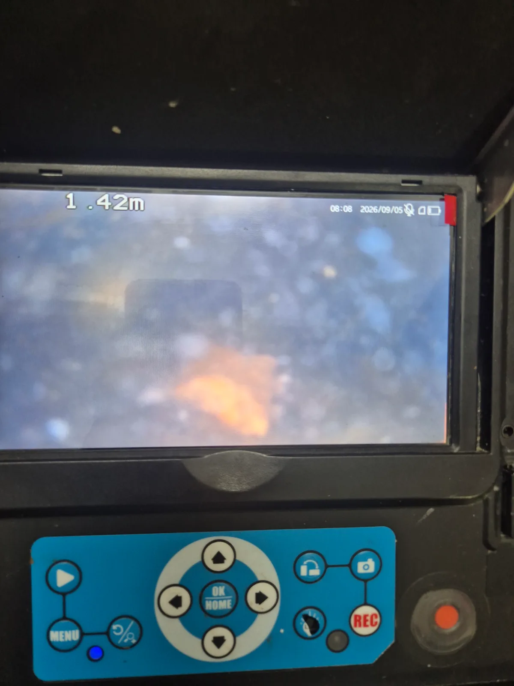
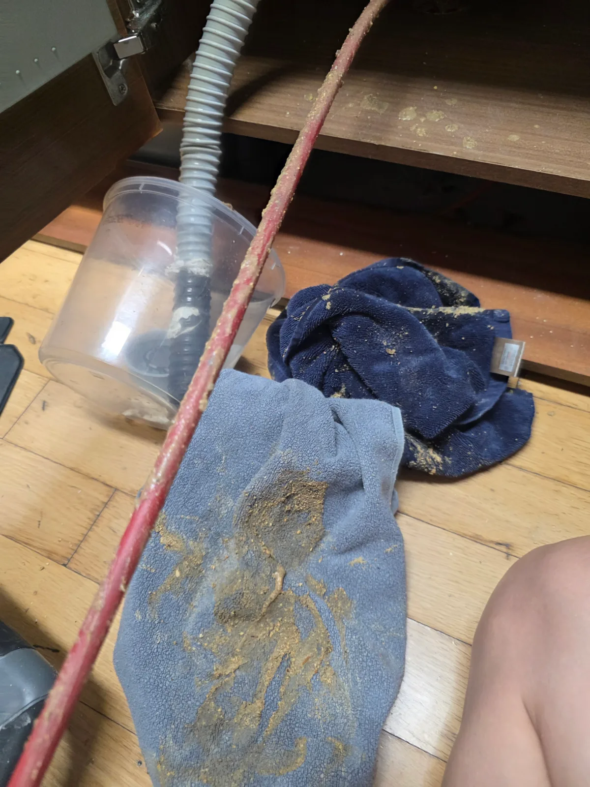
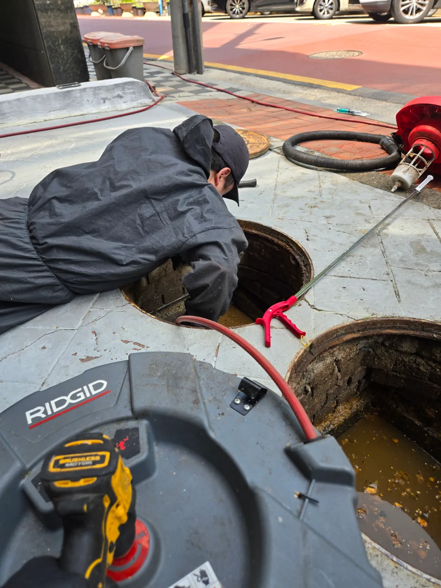

강동구 명일동 싱크대뚫는업체 | 기름때 제거와 정상 통수 확인 과정
명일동 싱크대뚫는업체의 작업 과정을 살펴볼 때는 물길 확보 이후 잔여 오염을 어떻게 확인하는지 보세요. 신라건축설비는 이번 현장에서 기름때를 반복 제거하고 물을 흘리며 추가 작업한 뒤 배수 상태를 확인했습니다.
서울 · 강동구
신라건축설비가 강동구에서 직접 진단하고 해결한 실제 작업 기록입니다.
명일동 싱크대뚫는업체의 작업 과정을 살펴볼 때는 물길 확보 이후 잔여 오염을 어떻게 확인하는지 보세요. 신라건축설비는 이번 현장에서 기름때를 반복 제거하고 물을 흘리며 추가 작업한 뒤 배수 상태를 확인했습니다.

명일동 하수구막힘으로 소개하는 이번 작업 대상은 싱크대 배수관입니다. 배관 안의 많은 기름때가 물길을 좁히고 있어 샤프트 반복 작업과 물을 흘리는 추가 세척으로 배수 기능을 회복했습니다.

명일동 하수구업체에 싱크대 배수 문제를 문의할 때는 증상과 함께 점검·보양·작업·완료 확인 범위를 살펴보세요. 이번 사례는 신라건축설비의 명일동 기름때 제거 사례를 바탕으로 상담할 항목을 정리합니다.

명일동 싱크대막힘비용을 비교할 때는 막힘 제거와 잔여 오염 정리, 작업 후 확인이 어디까지 포함되는지 살펴보세요. 이번 현장은 샤프트 와이어에 기름때가 반복해서 묻어 나와 2~3회 작업을 이어갔습니다.

강동구 명일동 싱크대막힘 현장에서 와이어에 묻어 나오는 기름때를 제거했습니다 샤프트를 2 3회 반복하고 물을 흘리며 추가 작업해 정상 배수를
강동구 길동 변기막힘 변기를 탈거해 에어건으로 내부 트랩의 전자담배를 제거하고 재설치 후 반복 물내림 검사

강동구 성내동 하수구막힘 약 6개월 전에도 오수관 작업을 진행했던 성내동 현장으로 배관 구배가 거의 확보되지 않은 상태에서 휴지와 이물질이 다시

강동구 천호동 싱크대막힘 내시경 진단 후 석션과 샤프트로 오염물을 제거하고 배관 내부 재점검 및 싱크대 통수검사

강동구 암사동 싱크대막힘 아파트 싱크대 기름때를 샤프트로 분쇄하고 고압세척으로 잔여 오염물을 제거한 뒤 배수 확인

강동구 명일동 고압세척 변기 역류로 집수정과 정화조 합류 출수관을 점검하고 고압세척 및 샤프트로 막힘 관통

강동구 천호동 하수구막힘 화장실 바닥 배수구 역류를 내시경으로 점검하고 석션 및 샤프트 작업 후 정상 통수 확인